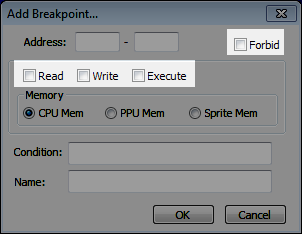
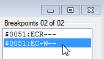
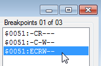
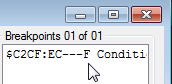
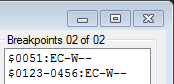
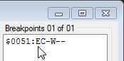
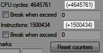

Содержание
Брейкпоинт (breakpoint, бряк, точка останова) - условие, при выполнении которого останавливается эмуляция игры. Условие помогает выловить код, отвечающий за какую-то задачу, например запись количества жизней в адрес игрока.
Изучив виды брейкпоинтов и потренировавшись в их создании, материал станет более понятным.
Список со всеми брейкпоинтами отображается здесь.

Максимальное количество брейкпоинтов в списке = 64.
Строка "Breakpoints 01 of 02" означает, что в данный момент активен 1 брейкпоинт из 2-х, добавленных в список. Брейкпоинт можно активировать/деактивировать двойным кликом.
Также можно кликнуть на нем правой кнопкой мыши и выбрать Toggle Breakpoint.
Если кликнуть на брейкпоинт из списка, станут активными кнопки Delete и Edit.
Кнопка Delete удаляет выделенный брейкпоинт, кнопка Edit вызывает окно редактирования брейкпоинта.
Окно Edit Breakpoint аналогично окну Add Breakpoint, вызываемого при добавлении брейкпоинта кнопкой Add, но при редактировании в окне будут отображены текущие данные выделенного брейкпоинта.
Если во время игры условие одного из активных брейкпоинтов сработает, эмулятор станет на паузу, будет вызвано окно Debugger'а, а сам брейкпоинт будет подсвечен синим цветом (как при выделении кликом мыши).
Рядом с адресом брейкпоинта указаны 6 флагов условий. Буква E (Enable) означает, что данный брейкпоинт активен. Если брейкпоинт деактивирован, то вместо буквы E стоит прочерк.
Про значения остальных флагов ты узнаешь в подразделах этой статьи.
Список брейкпоинтов сохраняется в одноименном файле .deb, который создается/обновляется после закрытия эмулятора.

Слева записан адрес, который указан в условии брейкпоинта. Если условие стоит на диапазон адресов, этот диапазон также отобржается в брейкпоинте.
Далее идут 6 индикаторов (флагов) брейкпоинта. Если вместо буквы стоит прочерк, значит этот тип условия в данный момент не используется.
Буква E (Enabled) означает, что брейкпоинт активен.
Буква C (CPU Memory) означает, что адрес из условия брейкпоинта находится в NES Memory (память процессора).
Также может быть буква P (PPU Memory) - видеопамять, и буква S (Sprite Memory) - память спрайтов.
Этот флаг используется всегда, поскольку нельзя создать брейкпоинт без указания типа памяти.
Буква R (Read) означает, что брейкпоинт с условием на чтение адреса.
Буква W (Write) означает, что брейкпоинт с условием на запись в адрес.
Буква E (Execute) означает, что брейкпоинт с условием на выполнение кода по указанному адресу.
Нажми на кнопку Add, появится окно создание брейкпоинта.
В зависимости от ситуации, перед создании брейкпоинтов предварительно ставить эмулятор на паузу вручную не обязательно.
Если дважды кликнуть по адресу слева от команды, можно быстро создавать Execute и Forbit брейкпоинты.